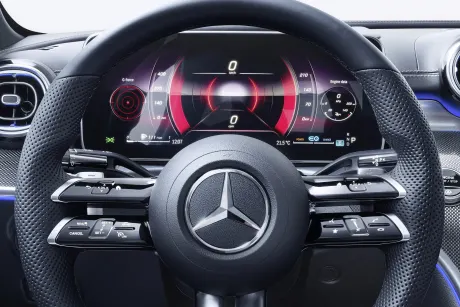

La Nouvelle Mercedes-Benz Classe C profite d’un style inspiré des nouvelles Classe E et Classe S, deux berlines de référence et s’éloigne du classisme du modèle qu’elle remplace. Elle évolue sur tous les points. Ses lignes sont plus tendues, plus fluides, plus modernes que jamais. Avec un style nettement plus dynamique, d’autant plus en finition AMG Line, la Mercedes Classe C 2021 n’oublie pas d’être élégante en conservant, comme un hommage, l’allure générale de sa devancière qui était elle aussi inspirée des premières Mercedes Classe C.
La face avant de la Nouvelle Classe C arbore la désormais célèbre calandre inversée que l’on retrouve sur les derniers modèles de la gamme Mercedes-Benz depuis la Classe A et qui apporte beaucoup de prestance. Elle donne l’impression d’être face à une voiture plus large qu’elle ne l’est vraiment. Cette calandre inaugure un nouveau dessin de grille avec une constellation de petites étoiles.
Cette calandre est entourée de nouveaux phares pouvant ressembler à ceux que l’on retrouve sur la Classe E. Pour autant, les phares de la Mercedes Classe C 2021 sont plus effilés et plus fins : ils donnent une allure plus dynamique.
L’arrière est fortement inspiré de la Classe E qui inaugurait des feux horizontaux sur les berlines. C’est la première fois qu’une Mercedes Classe C arbore des feux horizontaux mais aussi en deux parties en se prolongeant sur la malle de coffre. La malle de coffre de la propose une ouverture très similaire à celle que l’on retrouve sur le modèle précédent.
Autant l’extérieur de la Nouvelle Mercedes Classe C est un savant mélange de Classe E et de Classe S, autant l’intérieur est une Classe S en réduction. L’habitacle est impressionnant, révolutionnaire, technologique… Il est difficile de qualifier facilement son habitacle tant il existe d’adjectifs pour le décrire. Complètement aux antipodes de la concurrence, l’intérieur ne laissera personne indifférent en proposant un intérieur dégageant une ambiance unique sur le segment.
Directement repris de la Classe S, l’habitacle est un véritable écrin luxueux vous invitant au voyage dans lequel vous retrouverez bien entendu la nouvelle version de MBUX.
Le conducteur retrouvera en face de lui une dalle entièrement numérique d’une diagonale comprise entre 10,25 pouces et 12,3 pouces selon les versions. Placée à l'horizontal, le conducteur retrouvera toutes les informations essentielles liées à la conduite.
|  |
Au centre, nous retrouvons un écran en orientation portrait légèrement orienté vers le conducteur. L'écran qui semble flotter sur la planche de bord regroupe notamment la navigation, les commandes, l’infodivertissement… Cet écran est d'une diagonale de 9,5 pouces ou de 11,9 pouces selon les versions.
Grâce à l’écran du système d'info-divertissement, qui regroupe la majorité des commandes, il n'y a pratiquement plus de boutons physiques. Seule une fine ligne de raccourcis se retrouve sous la dalle pour sélectionner le mode de conduite, activer les warnings, gérer le volume de la radio, un capteur d’empreinte digitale sécurise vos données personnelles (email…) et active vos préférences à bord de la Nouvelle Mercedes Classe C…
Juste au-dessus de l'écran prennent place des aérateurs ronds, contrairement à ceux horizontaux de la Classe S. Cela apporte plus de sportivité à l’habitacle.